|
|
|
|
|
|

| 怪物写真 | 怪物名 | LV | 系別 | ＨＰ | ＥＸＰ | 攻撃力 | 防御力 |
|---|---|---|---|---|---|---|---|
| 特殊能力 | |||||||
| アイアンヘッド系 | |||||||
| アイアンヘッド | １ | 1ツ目系 | ７０ | １５００ | ２９ | ６ | |
| 正前方2格攻撃 | |||||||
| チェインヘッド | ２ | 1ツ目系 | ６８ | ４０００ | ３１ | ６ | |
| 正前方2格攻撃 | |||||||
| ギガヘッド | ３ | 1ツ目系 | ９０ | ４４００ | ３２ | ７ | |
| 正前方2格攻撃 | |||||||
| あくまだんしゃく系 | |||||||
| あくまだんしゃく | １ | ゴースト系 | ３９ | ５２ | １５ | ５ | |
| 使用隣接怪物的特殊能力 | |||||||
| あくまこうしゃく | ２ | ゴースト系 | ５５ | ４００ | ２６ | ６ | |
| 使用隣接怪物的特殊能力 | |||||||
| あくまぼうくん | ３ | ゴースト系 | ９０ | ４６００ | ３２ | ７ | |
| 使用隣接怪物的特殊能力 | |||||||
| あやしいひとだま系 | |||||||
| あやしいひとだま | １ | ゴースト，浮遊系 | 14 | 6 | ６ | ２ | |
| 水上移動 | |||||||
| おびえたしりょう | ２ | ゴースト，浮遊系 | 34 | 40 | １７ | ５ | |
| 水上移動 | |||||||
| なげきあくりょう | ３ | ゴースト，浮遊系 | 60 | 70 | ２０ | ５ | |
| 水上移動 | |||||||
| イカキング系 | |||||||
| イカキング | １ | − | 69 | 160 | ２３ | ６ | |
| 使西林失明状態 | |||||||
| イカだいおう | ２ | − | 80 | 3500 | ３０ | ６ | |
| 使西林失明状態 | |||||||
| イカエンペラー | ３ | − | 84 | 4000 | ３１ | ６ | |
| 使西林失明状態 | |||||||
| いねむりせんにん系 | |||||||
| いねむりせんにん | １ | − | 20 | 23 | ３ | ６ | |
| 進入窄道後經常会進入睡眠状態 | |||||||
| すいみんせんにん | ２ | − | 33 | 40 | ９ | ６ | |
| 進入窄道後經常会進入睡眠状態 | |||||||
| おだぶつせんにん | ３ | − | 50 | 1500 | １８ | ７ | |
| 進入窄道後經常会進入睡眠状態 | |||||||
| いやしウサギ系 | |||||||
| いやしウサギ | １ | − | 30 | 35 | １６ | ５ | |
| 回復隣接的其中1個受傷怪物的HP | |||||||
| きゅうめいウサギ | ２ | − | 90 | 85 | ３０ | ６ | |
| 瞬間移動給其他受傷怪物回復HP | |||||||
| ウツボカズラ系 | |||||||
| 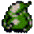 | ウツボカズラ | １ | − | 20 | 10 | ５→１５ | ５ |
| 吃入的道具会變成草 | |||||||
| 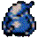 | しきべつカズラ | ２ | − | 61 | 500 | ２５→２７ | ６ |
| 吃入的道具会被識別 | |||||||
| しゅくふくカズラ | ３ | − | 63 | 500 | ２５→２７ | ６ | |
| 吃入的道具会被祝福 | |||||||
| ウルロイド系 | |||||||
| ウルロイド | １ | 爆弾系 | 30 | 35 | １４ | ５ | |
| 投擲爆弾、攻撃範圍2格 | |||||||
| ゴリボット | ２ | 爆弾系 | 35 | 50 | １８ | ５ | |
| 投擲爆弾、攻撃範圍3格 | |||||||
| ベアボーグ | ３ | 爆弾系 | 85 | 3600 | ３１ | ６ | |
| 投擲爆弾、攻撃範圍6格 | |||||||
| エーテルデビル系 | |||||||
| エーテルデビル | １ | ゴースト，浮遊系 | 26 | 27 | １７ | ５ | |
| 魔法無効化＋透明化 | |||||||
| ホルムデーモン | ２ | ゴースト，浮遊系 | 79 | 1800 | ２９ | ６ | |
| 魔法反射＋透明化 | |||||||
| メチルサタン | ３ | ゴースト，浮遊系 | 95 | 3300 | ３２ | ７ | |
| 2倍速移動＋魔法乱反射＋透明化 | |||||||
| おばけダイコン系 | |||||||
| おばけダイコン | １ | − | 65 | 1800 | ２６ | ６ | |
| 投擲毒草、射程為直線上２格以内 | |||||||
| めまわしダイコン | ２ | − | 70 | 2000 | ２７ | ６ | |
| 投擲混乱草、射程為週圍5格以内 | |||||||
| ねむりダイコン | ３ | − | 75 | 3000 | ２７ | ６ | |
| 投擲睡眠草、射程為週圍5格以内 | |||||||
| ガイコツまどう系 | |||||||
| ガイコツまどう | １ | ゴースト，魔法系 | 25 | 20 | １４ | ４ | |
| 向前方直線状發揮魔道之杖的效果 | |||||||
| ガイコツまじん | ２ | ゴースト，魔法系 | 40 | 280 | ２１ | ６ | |
| 能發揮混乱、一時凌ぎ、金縛り、変化等杖的效果 | |||||||
| ガイコツまおう | ３ | ゴースト，魔法系 | 75 | 2000 | ２７ | ６ | |
| 能發揮不幸、睡眠、鈍足、ブフー、みがわり、封印等杖的效果 | |||||||
| かさタヌキ系 | |||||||
| かさタヌキ | １ | − | 16 | 5 | ９ | ４ | |
| 能變成各種道具的樣子 | |||||||
| からからタヌキ | ２ | − | 52 | 300 | ２７ | ６ | |
| 能變成各種道具的樣子 | |||||||
| たんたんタヌキ | ３ | − | 95 | 1500 | ３１ | ６ | |
| 能變成各種道具的樣子 | |||||||
| かっとびイノシシ系 | |||||||
| かっとびイノシシ | １ | − | 15 | 8 | ６ | ４ | |
| 能把西林撞飛5格遠 | |||||||
| げきとつイノシシ | ２ | − | 64 | 800 | ２７ | ６ | |
| 能把西林撞飛5格遠 | |||||||
| かいめつイノシシ | ３ | − | 70 | 1900 | ２８ | ６ | |
| 能把西林撞飛5格遠 | |||||||
| カラカイおさる系 | |||||||
| カラカイおさる | １ | − | 12 | 10 | ４ | ４ | |
| 在房間内的時候保持与西林相隔一格遠的位置 | |||||||
| 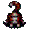 | チャカシおさる | ２ | − | 62 | 1250 | ２７ | ６ |
| 在房間内的時候保持与西林相隔一格遠的位置 | |||||||
| ミクダシおさる | ３ | − | 72 | 1550 | ２８ | ６ | |
| 在房間内的時候保持与西林相隔一格遠的位置 | |||||||
| カラスてんぐ系 | |||||||
| カラスてんぐ | １ | − | 50 | 100 | １４ | ５ | |
| 變成該層出現的其他怪物的樣子、但無其特殊能力 | |||||||
| ハヤブサてんぐ | ２ | − | 60 | 500 | １４ | ５ | |
| 變成該層出現的其他怪物的樣子、但無其特殊能力 | |||||||
| イヌワシてんぐ | ３ | − | 70 | 600 | １４ | ５ | |
| 變成該層出現的其他怪物的樣子、但無其特殊能力 | |||||||
| からぶりせんにん系 | |||||||
| からぶりせんにん | １ | − | 33 | 46 | １５ | ５ | |
| 使西林5回合之内空振状態 | |||||||
| こごとせんにん | ２ | − | 32 | 46 | １７ | ６ | |
| 使西林5回合之内睡眠状態 | |||||||
| みかわしせんにん | ３ | − | 60 | 2000 | ２８ | ６ | |
| 直接攻撃無効化 | |||||||
| 鬼面武者系 | |||||||
| 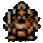 | 鬼面武者 | １ | カタナ系 | 40 | 47 | １８ | ５ |
| 死亡4回合之後出現亡靈武者 | |||||||
| 般若武者 | ２ | カタナ系 | 65 | 1300 | ３０ | ６ | |
| 反射直接攻撃、死亡4回合之後出現亡靈般若 | |||||||
| 将軍 | ３ | カタナ系 | 70 | 1350 | ３０ | ６ | |
| 死亡4回合之後出現將軍喪尸 | |||||||
| ギャザー系 | |||||||
| ギャザー | １ | − | 50 | 180 | １８ | ６ | |
| 全部特殊攻撃無効化、轉化為2點傷害 | |||||||
| キラーギャザー | ２ | − | 60 | 5000 | ２６ | ６ | |
| 全部特殊攻撃無効化、轉化為2點傷害 | |||||||
| ヘルギャザー | ３ | − | 81 | 6100 | ３１ | ７ | |
| 全部特殊攻撃無効化、轉化為2點傷害 | |||||||
| ギャドン系 | |||||||
| ギャドン | １ | 盗っと，浮遊系 | 60 | 165 | ２３ | ６ | |
| 盜取杖後令其使用回数變為0 | |||||||
| キャイラス | ２ | 盗っと，浮遊系 | 65 | 165 | ２４ | ６ | |
| 盜取壺後令其使用回数變為0 | |||||||
| ギャンドラー | ３ | 盗っと，浮遊系 | 80 | 4200 | ３３ | ６ | |
| 盜取装備後消除其中1個合成能力 | |||||||
| きりせんにん系 | |||||||
| きりせんにん | １ | 魔法，ドレイン系 | 13 | 8 | ５ | ４ | |
| 隣接状態時、使西林10回合内无法自動回復HP | |||||||
| みのせんにん | ２ | 魔法，ドレイン系 | 56 | 350 | ２３ | ５ | |
| 直線状態時、使西林２０回合内ＨＰ無法自動回復、使用２次以上則HP不斷減少 | |||||||
| かすみせんにん | ３ | 魔法，ドレイン系 | 80 | 2000 | ３０ | ６ | |
| 同一房間内時、使西林3０回合内ＨＰ無法自動回復、使用２次以上則HP不斷減少 | |||||||
| くねくねハニー系 | |||||||
| くねくねハニー | − | ドレイン系 | 80 | 4000 | ３３ | ７ | |
| 隣接状態時使西林LV下降 | |||||||
| ゲイズ系 | |||||||
| ゲイズ | １ | １ツ目，魔法系 | 19 | 20 | ９ | ４ | |
| 隣接状態時使用催眠攻撃、西林無法控制自己的操作 | |||||||
| スーパーゲイズ | ２ | １ツ目，魔法系 | 75 | 600 | ２６ | ５ | |
| 隣接状態時使用催眠攻撃、西林無法控制自己的操作 | |||||||
| ハイパーゲイズ | ３ | １ツ目，魔法系 | 100 | 4000 | ３３ | ６ | |
| 隣接状態時使用催眠攻撃、西林無法控制自己的操作 | |||||||
| けいほうバエ系 | |||||||
| けいほうバエ | １ | 浮遊系 | 34 | 48 | １６ | ５ | |
| 使整層昏睡的怪物醒來、可在水上移動 | |||||||
| みっこくバエ | ２ | 浮遊系 | 56 | 450 | ２５ | ６ | |
| 使整層昏睡的怪物醒來、可在水上移動 | |||||||
| たれこみバエ | ３ | 浮遊系 | 60 | 850 | ３０ | ６ | |
| 使整層昏睡的怪物醒來、可在水上移動 | |||||||
| ゴーグラー系 | |||||||
| ゴーグラー | １ | − | 35 | 30 | １８ | ４ | |
| 有近視的特性、不与西林相距2格以内就不会對西林攻撃。 | |||||||
| ワースゴーグラー | ２ | − | 66 | 2000 | ２９ | ６ | |
| 有近視的特性、不与西林相距2格以内就不会對西林攻撃。 | |||||||
| グレンゴーグラー | ３ | − | 77 | 4000 | ３４ | ６ | |
| 有近視的特性、不与西林相距2格以内就不会對西林攻撃。 | |||||||
| コクワガッター系 | |||||||
| コクワガッター | １ | − | 45 | 85 | １７ | ６ | |
| 將臨接怪物投向西林、有效範圍2格内 | |||||||
| 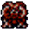 | クーワガッター | ２ | − | 75 | 3000 | ３３ | ７ |
| 將隣接怪物投向西林、与西林隣接時則把西林投向附近的机關或者怪物房間、有效範圍5格内 | |||||||
| ノコギガッター | ３ | − | 76 | 3500 | ３４ | ７ | |
| 將隣接怪物投向西林、与西林隣接時則把西林投向附近的机關或者怪物房間、有效範圍10格内 | |||||||
| ざぜんどうじ系 | |||||||
| ざぜんどうじ | １ | 浮遊系 | 40 | 22 | １３ | ５ | |
| 可在水上移動 | |||||||
| ざぜんそくぶつ | ２ | 浮遊系 | 50 | 75 | ２２ | ５ | |
| 可在水上移動 | |||||||
| ざぜんにゅうどう | ３ | 浮遊系 | 55 | 150 | ２３ | ６ | |
| 可在水上移動 | |||||||
| サムライどん系 | |||||||
| サムライどん | １ | カタナ系 | 29 | 26 | １２ | ５ | |
| 反射部分直接攻撃 | |||||||
| タイショウどん | ２ | カタナ系 | 72 | 2150 | ２６ | ６ | |
| 反射杖的魔法攻撃 | |||||||
| トノサマどん | ３ | カタナ系 | 80 | 2100 | ２８ | ６ | |
| 反射飛行道具的攻撃 | |||||||
| しのつかい系 | |||||||
| しのつかい | １ | ゴースト，浮遊，カタナ系 | 17 | 12 | ５ | ４ | |
| 1回合２次攻撃 | |||||||
| じごくのししゃ | ２ | ゴースト，浮遊，カタナ系 | 20 | 16 | １４ | ４ | |
| ２倍速移動、1回合２次攻撃 | |||||||
| しにがみ | ３ | ゴースト，浮遊，カタナ系 | 70 | 1800 | ２３ | ６ | |
| ２倍速移動、1回合２次攻撃、穿牆 | |||||||
| ジャンガリガン系 | |||||||
| 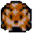 | ジャンガリガン | １ | 盗っと系 | 13 | 8 | ５ | ４ |
| 盗取西林的道具往反方向投擲 | |||||||
| キャンベラン | ２ | 盗っと系 | 50 | 165 | ２１ | ６ | |
| 盗取西林的道具往反方向投擲 | |||||||
| グロバラン | ３ | 盗っと系 | 100 | 2500 | ３１ | ６ | |
| 盗取西林的道具往反方向投擲 | |||||||
| シューベル系 | |||||||
| シューベル | １ | − | 28 | 35 | １４ | ５ | |
| 隨機召喚1只LV1的怪物 | |||||||
| メンベルス | ２ | − | 45 | 100 | ２３ | ５ | |
| 隨機召喚1只LV2的怪物 | |||||||
| ベルトーベン | ３ | − | 55 | 1600 | ２７ | ６ | |
| 隨機召喚3只LV3的怪物 | |||||||
| じんめんいわ系 | |||||||
| じんめんいわ | １ | − | 25 | 21 | １１ | ４ | |
| 一般在某處待機、等西林走近時再突然攻撃 | |||||||
| きめんがんせき | ２ | − | 55 | 450 | ２６ | ６ | |
| 一般在某處待機、等西林走近時再突然攻撃 | |||||||
| デーモンズロック | ３ | − | 70 | 2500 | ３２ | ７ | |
| 一般在某處待機、等西林走近時再突然攻撃 | |||||||
| すすりムシ系 | |||||||
| すすりムシ | １ | １ツ目，ドレイン系 | 15 | 24 | １３ | ５ | |
| 使西林的力量値下降1點 | |||||||
| きゅういんちゅう | ２ | １ツ目，ドレイン系 | 55 | 330 | ２２ | ６ | |
| 使西林的力量値下降2點 | |||||||
| がぶのみムシ | ３ | １ツ目，ドレイン系 | 80 | 1560 | ２９ | ６ | |
| 使西林的力量値下降3點 | |||||||
| セルアーマー系 | |||||||
| セルアーマー | １ | 浮遊系、カタナ系 | ６５ | １０５０ | ２５ | ６ | |
| 弾飛西林已装備的武器、盾和腕輪。詛呪状態無法弾飛。可在水上移動 | |||||||
| クロムアーマー | ２ | 浮遊系、カタナ系 | ７０ | ２５００ | ２９ | ６ | |
| 弾飛西林已装備的武器、盾和腕輪。詛呪状態無法弾飛。可在水上移動 | |||||||
| チタンアーマー | ３ | 浮遊系、カタナ系 | ８０ | ３９００ | ２９ | ６ | |
| 弾飛西林已装備的武器、盾和腕輪。詛呪状態無法弾飛。可在水上移動 | |||||||
| タウロス系 | |||||||
| タウロス | １ | カタナ系 | ６６ | １５０ | ２３ | ６ | |
| 一定機率使出痛恨一撃 | |||||||
| ミノタウロス | ２ | カタナ系 | ６６ | １０００ | ２６ | ６ | |
| 一定機率使出痛恨一撃 | |||||||
| メガタウロス | ３ | カタナ系 | ８５ | 5500 | ３４ | ７ | |
| 一定機率使出痛恨一撃 | |||||||
| ダギャン系 | |||||||
| ダギャン | １ | ドラゴン系 | １８ | １３ | ８ | ４ | |
| 無特殊能力 | |||||||
| ダギャダギャン | ２ | ドラゴン系 | ８４ | ３０００ | ３２ | ６ | |
| 無特殊能力 | |||||||
| 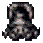 | ダギャギャギャン | ３ | ドラゴン系 | ９０ | ３２００ | ３４ | ７ |
| 無特殊能力 | |||||||
| タベラレルー系 | |||||||
| タベラレルー | − | − | ６ | １ | １ | ２ | |
| 通常成為其他怪物攻撃的首選目標 | |||||||
| チキン系 | |||||||
| 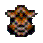 | チキン | １ | − | ８ | １２ | １ | ３ |
| 2倍速移動。被爆弾、地雷炸死会變成肉 | |||||||
| マスターチキン | ２ | − | ８０ | ３０００ | ３０ | ６ | |
| HP降為四分之一時会降級變成チキン | |||||||
| グレートチキン | ３ | − | ９０ | ４３００ | ２８ | ６ | |
| ２倍速移動1回合２次攻撃、HP降為四分之一時会降級變成チキン | |||||||
| ちょうちんフグ系 | |||||||
| ちょうちんフグ | １ | ドレイン系 | ４０ | １１５ | ２３ | ５ | |
| 降低西林満腹度10% | |||||||
| あんどんフグ | ２ | ドレイン系 | ６５ | ２４０ | ２７ | ５ | |
| 降低西林満腹度30% | |||||||
| かんてらフグ | ３ | ドレイン系 | ７０ | １０００ | ２５ | ６ | |
| 降低西林最大満腹度10% | |||||||
| チンタラ系 | |||||||
| チンタラ | １ | − | ７ | ５ | ３ | ４ | |
| 無特殊能力 | |||||||
| ちゅうチンタラ | ２ | − | ４５ | ５０ | １８ | ５ | |
| 無特殊能力 | |||||||
| おおチンタラ | ３ | − | ７０ | ２４０ | ２７ | ５ | |
| 無特殊能力 | |||||||
| つえふりわらべ系 | |||||||
| つえふりわらべ | １ | 魔法系 | ７ | ５ | ４ | ３ | |
| 可對西林使用場所替えの杖 | |||||||
| つえふりぼうず | ２ | 魔法系 | １２ | ７ | ４ | ３ | |
| 可對西林使用ふきとばしの杖 | |||||||
| つえふりワルガキ | ３ | 魔法系 | １３ | ９ | ５ | ４ | |
| 可對西林使用かなしばりの杖 | |||||||
| 壺つりジジイ系 | |||||||
| 壺つりジジイ | １ | 盗っと系 | ２２ | ２５ | １４ | ５ | |
| 盗取西林的壷之后2倍速逃走 | |||||||
| 壺つりおきな | ２ | 盗っと系 | ２５ | ２８ | １５ | ５ | |
| 盗取西林的壷之后2倍速逃走 | |||||||
| 壺つりちょうろう | ３ | 盗っと系 | １００ | ４０００ | ３０ | ６ | |
| 盗取西林的壷之后2倍速逃走、被盗的壺会變為普通之壺 | |||||||
| デブータ系 | |||||||
| デブータ | １ | − | ２０ | １８ | ９ | ４ | |
| 射程為2格遠的抛石攻撃 | |||||||
| デブーチョ | ２ | − | ６０ | ５０ | １４ | ５ | |
| 射程為5格遠的抛石攻撃 | |||||||
| デブートン | ３ | − | ６１ | ９５０ | ２３ | ６ | |
| 射程為10格遠的抛石攻撃 | |||||||
| とおせんりゅう系 | |||||||
| とおせんりゅう | １ | ドラゴン系 | ３６ | ３０ | １７ | ５ | |
| 該怪物後面有其他怪物跟隨的時候其会繞到西林背後 | |||||||
| ドラゴンヘッド | ２ | ドラゴン系 | １００ | ３７５０ | ３３ | ７ | |
| 該怪物後面有其他怪物跟隨的時候其会繞到西林背後 | |||||||
| スルードラゴン | ３ | ドラゴン系 | １１０ | ４５００ | ３５ | ７ | |
| 該怪物後面有其他怪物跟隨的時候其会繞到西林背後 | |||||||
| ドラゴン系 | |||||||
| 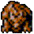 | ドラゴン | １ | ドラゴン系 | ７０ | ３５０ | ２５ | ６ |
| 直線状向前吐火、20點無視防御力的傷害 | |||||||
| スカイドラゴン | ２ | ドラゴン系 | １２５ | ６５００ | ３７ | ７ | |
| 對同一房間内的怪物不限射程30點無視防御力的龍炎攻撃、火炎自動鎖定目標并可穿透牆壁和怪物 | |||||||
| アークドラゴン | ３ | ドラゴン系 | １３５ | ８０００ | ３９ | ７ | |
| 週圍10格内或對同一房間内的怪物不限射程無視防御力的40點龍炎攻撃、火炎自動鎖定目標并可穿透牆壁和怪物 | |||||||
| にぎりへんげ系 | |||||||
| にぎりへんげ | １ | − | ５０ | １５０ | ２１ | ５ | |
| 把西林身上的道具變為飯團 | |||||||
| にぎりおやかた | ２ | − | ８０ | ９００ | ２６ | ５ | |
| 將西林變為飯團状態 | |||||||
| にぎりもとじめ | ３ | − | １００ | ２６００ | ３３ | ６ | |
| 先將西林變為飯團状態、再把西林身上的道具變為飯團 | |||||||
| にらみヘビ系 | |||||||
| にらみヘビ | １ | ドラゴン系 | ２４ | １７ | ９ | ３ | |
| 無特殊能力 | |||||||
| ギョロつきヘビ | ２ | ドラゴン系 | ５０ | １４０ | ２５ | ６ | |
| 無特殊能力 | |||||||
| ガンたれヘビ | ３ | ドラゴン系 | ７０ | ３１２０ | ３３ | ６ | |
| 無特殊能力 | |||||||
| ねずみこぶん系 | |||||||
| ねずみこぶん | １ | − | ６ | ４ | ２ | ３ | |
| 無特殊能力 | |||||||
| ねずみおやぶん | ２ | − | １０ | ７ | ３ | ３ | |
| 無特殊能力 | |||||||
| ねずみくろまく | ３ | − | ３０ | ２０ | ９ | ４ | |
| 無特殊能力 | |||||||
| ノロージョ系 | |||||||
| ノロージョ | １ | − | １７ | １３ | ５ | ４ | |
| 使西林身上1個道具變為詛呪状態 | |||||||
| ノロージョの姉 | ２ | − | ３２ | ３５ | １４ | ５ | |
| 使西林身上2個道具變為詛呪状態 | |||||||
| ノロージョの母 | ３ | − | ８８ | ３８００ | ３３ | ６ | |
| 使西林身上4個道具變為詛呪状態 | |||||||
| パおう系 | |||||||
| パおう | １ | 魔法系 | ４０ | ８３ | ２１ | ５ | |
| 可使用封印の杖 | |||||||
| パオパおう | ２ | 魔法系 | ５６ | １２００ | ２８ | ６ | |
| 可使用鈍足の杖 | |||||||
| パオパおーン | ３ | 魔法系 | ７０ | ４５００ | ２９ | ６ | |
| 可使用クォーターの杖 | |||||||
| ばくだんウニ系 | |||||||
| ばくだんウニ | １ | 爆弾系 | １２０ | ２００ | １５ | ５ | |
| 進入爆發状態之後5回合後自爆、威力等同地雷 | |||||||
| ばくれつウニ | ２ | 爆弾系 | １２０ | ２０００ | ２８ | ６ | |
| 進入爆發状態之後5回合後自爆、威力等同大型地雷 | |||||||
| だいふんかウニ | ３ | 爆弾系 | １２０ | ３０００ | ２８ | ？６ | |
| 見到西林之後馬上跳到西林身旁并進入爆發状態、之後5回合後自爆、威力等同大型地雷 | |||||||
| パコレプキン系 | |||||||
| パコレプキン | １ | ゴースト，浮遊系 | ３０ | ２２ | １２ | ４ | |
| 穿牆、飄忽不定地移動 | |||||||
| パコレプキーナ | ２ | ゴースト，浮遊系 | ５４ | ９０ | ２２ | ５ | |
| 穿牆、飄忽不定地移動 | |||||||
| パコレプキング | ３ | ゴースト，浮遊系 | ８０ | ３４００ | ３７ | ６ | |
| 穿牆、飄忽不定地移動 | |||||||
| はじきコガネ系 | |||||||
| はじきコガネ | １ | − | ４２ | ６０ | １８ | ６ | |
| 將樓梯以直線方式移動到別處 | |||||||
| ふきとばホタル | ２ | − | ８０ | ３５００ | ３３ | ６ | |
| 將樓梯以直線方式移動到別處 | |||||||
| はねとばカブト | ３ | − | ８２ | ３５００ | ３４ | ６ | |
| 將樓梯以直線方式移動到別處 | |||||||
| バットカンガルー系 | |||||||
| バットカンガルー | １ | − | ２５ | ２０ | ９ | ４ | |
| 使其他怪物發怒状態 | |||||||
| エビルカンガルー | ２ | − | ６５ | １３００ | ２５ | ５ | |
| 使其他怪物2倍速状態 | |||||||
| デビルカンガルー | ３ | − | ８０ | ２９００ | ３３ | ６ | |
| 使其他怪物發怒＋2倍速状態 | |||||||
| ぴーたん系 | |||||||
| ぴーたん | １ | １ツ目系 | ８ | １２ | １ | ３ | |
| 2倍速逃走、死後出現飯團 | |||||||
| にげピータン | ２ | １ツ目系 | ８ | １２ | １ | ３ | |
| 2倍速逃走、死後出現大飯團 | |||||||
| とびぴーたん | ３ | １ツ目系 | ８ | １２ | １ | ３ | |
| 2倍速逃走、接近西林2格内会瞬飛到別處、死後出現特製飯團 | |||||||
| ヒツジしんかん系 | |||||||
| ヒツジしんかん | １ | ドレイン，魔法系 | ２０ | １５ | ８ | ５ | |
| 使西林的攻撃力一定回合内減半 | |||||||
| ヤギしさい | ２ | ドレイン，魔法系 | ６０ | １８０ | １８ | ５ | |
| 使西林的攻撃力一定回合内減半 | |||||||
| ガゼルきょうこう | ３ | ドレイン，魔法系 | ８０ | ２２００ | ３２ | ６ | |
| 使西林的攻撃力一定回合内減半 | |||||||
| ひまガッパ系 | |||||||
| ひまガッパ | １ | − | ４０ | １２０ | １８ | ５ | |
| 拾起地上的道具投向西林、也会投入壺内 | |||||||
| いやすぎガッパ | ２ | − | ６０ | １５００ | ２６ | ６ | |
| 拾起地上的道具投向西林、也会投入壺内 | |||||||
| たまらんガッパ | ３ | − | ７０ | ２９００ | ２８ | ６ | |
| 拾起地上的道具投向西林、也会投入壺内 | |||||||
| ヒャクメ系 | |||||||
| ヒャクメ | １ | 魔法系 | ４０ | １５５ | ２１ | ６ | |
| 隣接時使西林混乱状態 | |||||||
| おおヒャクメ | ２ | 魔法系 | ６０ | ８００ | ２５ | ６ | |
| 使西林混乱状態、射程為同一直線上 | |||||||
| ヒャクメまじん | ３ | 魔法系 | ８０ | ２９８０ | ２７ | ６ | |
| 使西林混乱状態、射程為相同房間内 | |||||||
| へいたいアリ系 | |||||||
| へいたいアリ | １ | カタナ系 | ２３ | １６ | １４ | ４ | |
| 可掘開牆壁 | |||||||
| たいちょうアリ | ２ | カタナ系 | ４０ | ８２ | ２０ | ５ | |
| 可掘開牆壁 | |||||||
| しょうぐんアリ | ３ | カタナ系 | ８０ | １５００ | ２６ | ６ | |
| 2倍速移動、可掘開牆壁 | |||||||
| ボウヤー系 | |||||||
| ボウヤー | １ | − | ２８ | ２８ | １１ | ５ | |
| 木箭攻撃 | |||||||
| クロスボウヤー | ２ | − | ２８ | ３３ | １５ | ５ | |
| 鉄箭攻撃 | |||||||
| コドモせんしゃ | １ | − | ６０ | １８００ | ２８ | ６ | |
| 在房間内的時候保持与西林相隔1格遠的位置并發射鉄箭攻撃 | |||||||
| チビタンク | ２ | − | ７２ | ３７００ | ２９ | ６ | |
| 在房間内的時候保持与西林相隔1格遠的位置并發射銀箭攻撃 | |||||||
| オヤジせんしゃ | １ | 爆弾系 | ８０ | ２５００ | １８ | ６ | |
| 半速移動、30點無視防御力大砲轟撃 | |||||||
| 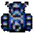 | ガンコせんしゃ | ２ | 爆弾系 | ９０ | ３０００ | １８ | ６ |
| 30點無視防御力大砲轟撃 | |||||||
| イッテツせんしゃ | ３ | 爆弾系 | １００ | ５５００ | １８ | ６ | |
| 2倍速移動、30點無視防御力大砲轟撃 | |||||||
| ぼうれいむしゃ系 | |||||||
| ぼうれいむしゃ | １ | ゴースト系 | ４ | １ | １ | ８ | |
| 進入其他怪物的身体使其升級 | |||||||
| ぼうれいはんにゃ | ２ | ゴースト系 | ４ | １ | １１ | ８ | |
| 反射直接攻撃 | |||||||
| しょうぐんゾンビ | ３ | ゴースト系 | ５ | １ | １ | ８ | |
| 使其他死掉的怪物復活 | |||||||
| 魔城兵系 | |||||||
| 魔城兵 | １ | カタナ系 | ５ | ０ | ？ | ？ | |
| 無特殊能力 | |||||||
| 魔城強兵 | ２ | カタナ系 | ５０ | ０ | ？ | ？ | |
| 無特殊能力 | |||||||
| 魔城竜兵 | ３ | カタナ，ドラゴン系 | ５０ | ０ | ？ | ？ | |
| 無特殊能力 | |||||||
| まどろみつかい系 | |||||||
| まどろみつかい | １ | １ツ目，魔法系 | １６ | １５ | ４ | ３ | |
| 使西林進入睡眠状態5回合 | |||||||
| ねむりそうりょ | ２ | １ツ目，魔法系 | ６０ | ３００ | １６ | ６ | |
| 使西林進入睡眠状態5回合 | |||||||
| こんすいどうし | ３ | １ツ目，魔法系 | ８０ | ２７００ | ２５ | ６ | |
| 使西林進入睡眠状態5回合 | |||||||
| マムル系 | |||||||
| マムル | １ | − | ５ | ２ | １ | ３ | |
| 無特殊能力 | |||||||
| あなぐらマムル | ２ | − | ６ | ３ | ３ | ３ | |
| 無特殊能力 | |||||||
| どうくつマムル | ３ | − | ５ | １９００ | ３３ | ７ | |
| 無特殊能力 | |||||||
| ミドロ系 | |||||||
| 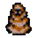 | ミドロ | １ | ドレイン系 | ３５ | ３０ | １ | ４ |
| 武器和盾的強度下降1點 | |||||||
| ゲドロ | ２ | ドレイン系 | ５５ | １５０ | １ | ６ | |
| 武器和盾的強度下降2點 | |||||||
| オドロ | ３ | ドレイン系 | ６５ | １３５０ | １ | ６ | |
| 武器和盾的強度下降3點、有鍍金状態首先破壞鍍金層 | |||||||
| ミニマゼルン系 | |||||||
| ミニマゼルン | １ | − | ６２ | ４５０ | ２３→２８→３２ | ６ | |
| 1次可以合成2個裝備 | |||||||
| ミニマゼモン | ２ | − | ７０ | １９００ | ２８→３２→３４→３６ | ６ | |
| 1次可以合成3個裝備 | |||||||
| ミニマゼゴン | ３ | − | ９０ | ３０００ | ３２→３４→３６→３８→３９ | ６ | |
| 1次可以合成4個裝備 | |||||||
| モラビー系 | |||||||
| モラビー | １ | − | ２０ | １４ | ９ | ４ | |
| 無特殊能力 | |||||||
| ワラビー | ２ | − | ３０ | ３６ | １５ | ５ | |
| 無特殊能力 | |||||||
| タカビー | ３ | − | ６５ | ５００ | ２５ | ６ | |
| 無特殊能力 | |||||||
| ヤミウッチー系 | |||||||
| ヤミウッチー | １ | カタナ系 | ３７ | ５２ | ２０ | ５ | |
| 無特殊能力 | |||||||
| フイウッチー | ２ | カタナ系 | ５０ | ２１０ | ２４ | ６ | |
| 与西林保持1格遠的距離、待機攻撃 | |||||||
| ミダレウッチー | ３ | カタナ系 | ６５ | ２３００ | ２９ | ６ | |
| 不分敵我進行攻撃 | |||||||
| やみかむろ系 | |||||||
| やみかむろ | １ | ゴースト系 | ５５ | １３０ | ２０ | ６ | |
| 杖効果無效化 | |||||||
| ようまかむろ | ２ | ゴースト系 | ５５ | １３０ | ２０ | ６ | |
| 巻物効果無效化 | |||||||
| あんこくかむろ | ３ | ゴースト系 | ６５ | ４０００ | ３２ | ６ | |
| 飛行道具無效化 | |||||||
| ワナニン系 | |||||||
| ワナニン | １ | − | ２４ | １８ | １０ | ４ | |
| 死後隨機出現機關、種類隨機 | |||||||
| ワナニンジャ | ２ | − | ４４ | ７０ | １８ | ５ | |
| 死後隨機出現機關、種類隨機 | |||||||
| ワナニンニン | ３ | − | ６６ | １４００ | ２９ | ６ | |
| 死後隨機出現機關、種類隨機 | |||||||
| ワルガマラ系 | |||||||
| 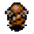 | ワルガマラ | １ | 盗っと系 | １３ | ５ | １ | ３ |
| 盗取西林身上的金錢 | |||||||
| ワルガマグッチ | ２ | 盗っと系 | ５４ | ５００ | １ | ６ | |
| 盗取西林身上的金錢 | |||||||
| ワルガマゴン | ３ | 盗っと系 | ７４ | ２０００ | １ | ６ | |
| 可以穿牆、盜取西林身上的金錢後埋入牆壁中 | |||||||
| ワルっとど系 | |||||||
| ワルっとど | １ | 盗っと系 | ４０ | ７５ | １８ | ６ | |
| 盗取西林身上的道具之後瞬飛放到別處、該層有商店時優先放到商店内、使其成為商店所賣的道具 | |||||||
| ギャングっとど | ２ | 盗っと系 | ５０ | ６００ | ２６ | ６ | |
| 盗取西林身上的道具之後瞬飛放到別處、該層有商店時優先放到商店内、使其成為商店所賣的道具 | |||||||
| ゴッドドファーザ | ３ | 盗っと系 | ６０ | １２００ | ２６ | ６ | |
| 盗取西林身上的道具之後瞬飛放到別處、該層有商店時優先放到商店内、使其成為商店所賣的道具 | 店主系 | ||||||
| 店主 | １ | − | ？ | ０ | ？ | ？ | |
| 泥棒時或受到西林攻撃時2倍速行動 | |||||||
| 店主 | ２ | − | ？ | ０ | ？ | ？ | |
| 泥棒時或受到西林攻撃時2倍速行動 | |||||||
| 店主 | ３ | − | ？ | ０ | ？ | ？ | |
| 泥棒時或受到西林攻撃時2倍速行動 | ばんけん系 | ||||||
| ばんけん | １ | − | ？ | ０ | ？ | ？ | |
| 2倍速移動 | |||||||
| もうけん | ２ | − | ？ | ０ | ？ | ？ | |
| 2倍速移動 | |||||||
| とうけん | ３ | − | ？ | ０ | ？ | ？ | |
| 2倍速移動 | とうぞくばん系 | ||||||
| とうぞくばん | １ | − | ？ | ０ | ？ | ？ | |
| 無特殊能力 | |||||||
| おかっぴき | ２ | − | ？ | ０ | ？ | ？ | |
| 無特殊能力 | |||||||
| じゅってもち | ３ | − | ？ | ０ | ？ | ？ | |
| 無特殊能力 | |||||||